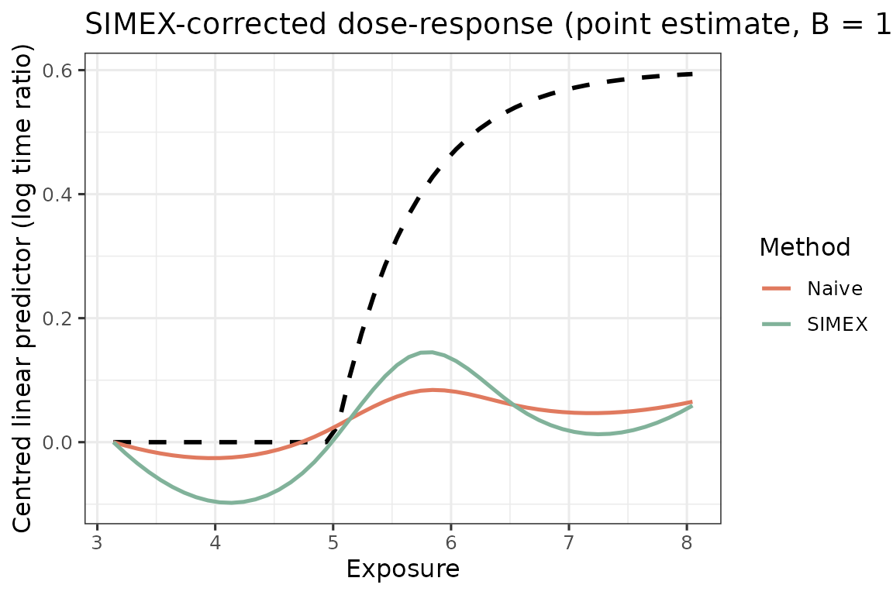

This vignette walks through one end-to-end fit on simulated data. The intended workflow on real data is the same four-stage pipeline:
-
Phase-1: Parameter estimation of the
measurement-error model on a small validation sample where both the
truth
Xand the surrogatesW_1, ..., W_Jare observed. -
Phase-1: GLS aggregation of the surrogates on the
main study into a single calibrated exposure
W_barwith a known conditional variance. -
Phase-2: SIMEX correction of an AFT-spline
dose-response fitted on
W_bar, which extrapolates back to the zero-error fit. - Phase-2:Two-stage bootstrap that resamples both the validation sample and the main study, so the resulting confidence band reflects uncertainty from both phases.
Simulate
generate_aft_data() returns a list with a main-study
survival data frame, a small validation data frame, and the truth used
to generate them. The main study has a latent exposure
X_true that is not observed in practice; only the
three noisy surrogates W1, W2, W3 are.
We put the exposure on the manuscript’s daily-LPA log
scale: X_true is log(LPA minutes)
with mean log(300) (about 300 min/day) and
sd = 0.45 (95% roughly in [124, 725] min), and the
dose-response threshold sits at log(150). See
vignette("applied-lpa") for displaying the fit back on the
minute / time-ratio scale.
XM <- log(300); XS <- 0.45 # ~300 min/day on the log analysis scale
FA <- list(x_min = log(150), alpha = 1.5, beta = 0.6)
sim <- generate_aft_data(n = 1000, n_val = 300,
x_mean = XM, x_sd = XS, f_args = FA, seed = 2026)
head(sim$survival, 3)
#> T_obs delta X_true W1 W2 W3 V1 V2 V3 V4
#> 1 826.9194 0 5.938048 7.232145 5.662174 4.362054 38.85282 30.99448 1 1
#> 2 368.2425 1 5.217922 4.126097 5.788306 3.672692 34.50189 30.82174 1 1
#> 3 879.5703 0 5.766440 3.989051 4.896449 5.322374 36.65207 30.40219 1 1Phase-1: Parameter estimation and surrogates aggregation
fit_me_calibration() estimates the classical
multivariate measurement-error model
on the validation sample, returning per-surrogate intercepts and
slopes together with the residual covariance Sigma_e. The
slope alpha1 near 1 indicates an essentially unbiased
surrogate; departures from 1 flag scale shift that the GLS step will
correct.
cal <- fit_me_calibration(sim$validation)
cal$alpha1 # close to 1: surrogates are essentially unbiased
#> [1] 0.8811036 1.1230261 1.2279714
round(cal$Sigma_e, 2) # error covariance across the three surrogates
#> [,1] [,2] [,3]
#> [1,] 1.94 1.00 1.01
#> [2,] 1.00 2.63 1.06
#> [3,] 1.01 1.06 2.60gls_combine() applies the per-surrogate back-transform
W_tilde_j = (W_j - alpha_{0j}) / alpha_{1j} and then
collapses the back-transformed surrogates with the GLS weights
omega = Sigma_tilde^{-1} 1 / (1' Sigma_tilde^{-1} 1). The
combined exposure W_bar is the minimum-variance linear
unbiased estimator of X available from the surrogates, and
its conditional variance sigma_w_sq is the residual ME
variance that SIMEX needs in the next step.
W <- as.matrix(sim$survival[, cal$W_cols])
g <- gls_combine(W, cal)
dat <- sim$survival
dat$W_bar <- g$W_bar
round(g$sigma_w_sq, 3) # residual ME variance fed to SIMEX
#> [1] 1.255Phase-2: SIMEX point estimate
SIMEX (simulation-extrapolation) corrects the bias that arises from
fitting the AFT-spline on the noisy W_bar instead of the
unobserved X. For each value of lambda it adds
extra Gaussian noise with variance lambda * sigma_w_sq to
W_bar, refits the dose-response B times, and
finally extrapolates the per-lambda curves back to
lambda = -1 (the zero-error case). Key knobs:
-
lambda— the perturbation grid. A typical choice isc(0.5, 1, 1.5, 2); including more values gives a more stable quadratic extrapolation. -
B— the number of Monte-Carlo perturbations perlambda. SmallB(say10–20) is enough for a quick look but visibly noisy;B = 100is the practical floor for a publication-quality point estimate. -
v_ref— the reference values of the adjustment covariates at which the dose-response is reported (the curve is invariant to this choice up to a vertical shift, which we remove below by anchoring at the first grid point).
x_grid <- seq(quantile(g$W_bar, 0.02),
quantile(g$W_bar, 0.98), length.out = 50)
s <- simex_aft_spline(
dat, x_var = "W_bar", sigma_w_sq = g$sigma_w_sq,
covariates = c("V1","V2","V3","V4"),
v_ref = c(V1 = 30, V2 = 30, V3 = 0, V4 = 0),
lambda = c(0.5, 1, 1.5, 2), B = 100,
x_grid = x_grid
)summary() reports the configuration of the fit alongside
the SIMEX-corrected dose-response at quantiles of the exposure grid,
with the naive curve as a smoothing-bias reference. The
Correction row quantifies how much SIMEX shifts the naive
curve at each exposure quantile – larger magnitude indicates more
residual ME attenuation that the correction is undoing.
summary(s)
#> SIMEX-corrected AFT-spline dose-response
#>
#> Call:
#> simex_aft_spline(data = dat, x_var = "W_bar", sigma_w_sq = g$sigma_w_sq,
#> covariates = c("V1", "V2", "V3", "V4"), v_ref = c(V1 = 30,
#> V2 = 30, V3 = 0, V4 = 0), lambda = c(0.5, 1, 1.5, 2),
#> B = 100, x_grid = x_grid)
#>
#> Configuration:
#> n observations: 1000 Spline df: 4
#> Covariates: V1, V2, V3, V4 Distribution: lognormal
#> Lambda grid: 0.0, 0.5, 1.0, 1.5, 2.0
#> Inner B: 100 sigma_w_sq: 1.2551
#>
#> Centred dose-response (anchored at min(x_grid)):
#> 5% 25% 50% 75% 95%
#> x 3.382 4.364 5.592 6.820 7.802
#> Naive -0.012 -0.019 0.076 0.051 0.057
#> SIMEX -0.040 -0.091 0.131 0.029 0.036
#> Correction -0.028 -0.071 0.054 -0.021 -0.021A bare plot() on the SIMEX object draws the corrected
curve with the naive curve overlaid (the smoothing-bias reference).
Because we are on simulated data we can also pass truth to
overlay the data-generating curve as a dashed line; on real data simply
omit it.
f_d <- function(x) do.call(f_true, c(list(x), FA))
truth <- f_d(x_grid) - f_d(x_grid[1])
plot(s, truth = truth,
title = "SIMEX-corrected dose-response (point estimate, B = 100)")
Phase-2: Uncertainty quantification with two-stage bootstrap
A naive bootstrap of the main study alone underestimates uncertainty
because it ignores the variability in the Phase-1 calibration. The
two_stage_bootstrap() wraps the full pipeline above —
resample the validation set, refit fit_me_calibration(),
resample the main study, recompute W_bar and
sigma_w_sq, then refit simex_aft_spline() — so
the resulting pointwise interval propagates both sources of
sampling variation. Key knobs:
-
R— the number of outer (validation + main) bootstrap replicates. Each replicate runs a complete SIMEX pipeline, so this is the dominant cost.R = 200is a sensible default for real-data reporting; we useR = 50here for build time. -
B— the SIMEX Monte-Carlo size inside each bootstrap replicate. Because the outer replicates already average over Monte Carlo noise, a moderate innerB(20–50) is typically sufficient even when the headline point estimate usesB = 100. -
lambda— must match the grid used for the point estimate, so that the bootstrap interval is centred on the same extrapolation scheme.
set.seed(2026)
boot <- two_stage_bootstrap(
survival = sim$survival,
validation = sim$validation,
x_var = "X_true", # truth column for calibration
covariates = c("V1","V2","V3","V4"),
v_ref = c(V1 = 30, V2 = 30, V3 = 0, V4 = 0),
lambda = c(0.5, 1, 1.5, 2), B = 30, R = 50,
x_grid = x_grid,
verbose = FALSE
)Plot with the bootstrap confidence band
The plot() method on the SIMEX object accepts a
ci argument with lower and upper
elements, so we can overlay the bootstrap percentile ribbon directly.
The point estimate s$curve_simex and the bootstrap
boot$f_hat are essentially identical (both are single SIMEX
runs on the full sample, differing only by RNG state); we plot
s here to keep the example self-contained.
plot(s, truth = truth,
ci = list(lower = boot$lower, upper = boot$upper),
title = "SIMEX-corrected dose-response with two-stage bootstrap CI")
Where to next
This vignette reports the fit on the internal log scale (the AFT
analysis axis). For the applied presentation – the
time-acceleration ratio against LPA in
minutes, anchored at a clinical reference of 200
min/day, with the lower-support caveat – see
vignette("applied-lpa"). For parallel execution of the
bootstrap, see two_stage_bootstrap(..., workers = 4) and
the note in vignette("faq").